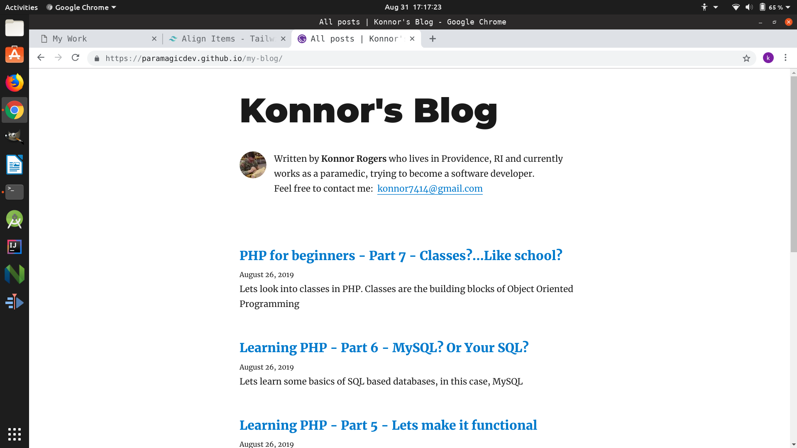
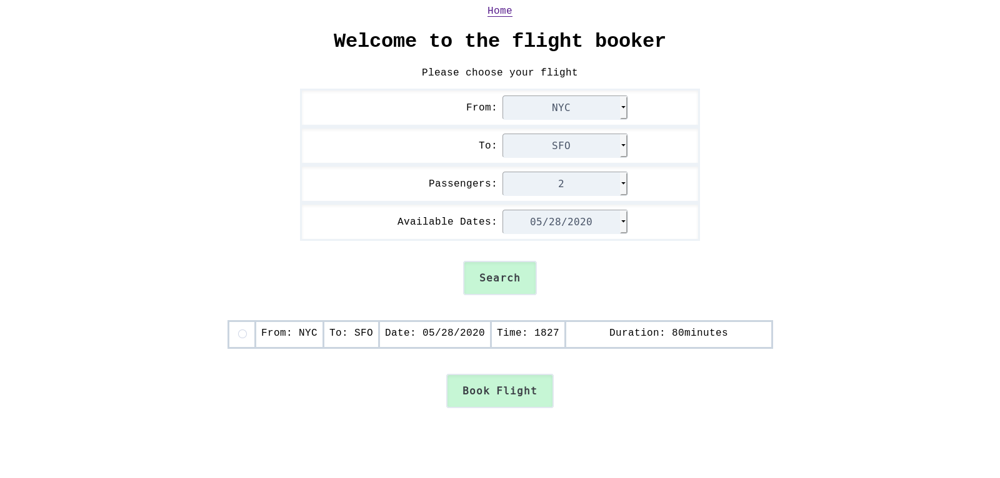
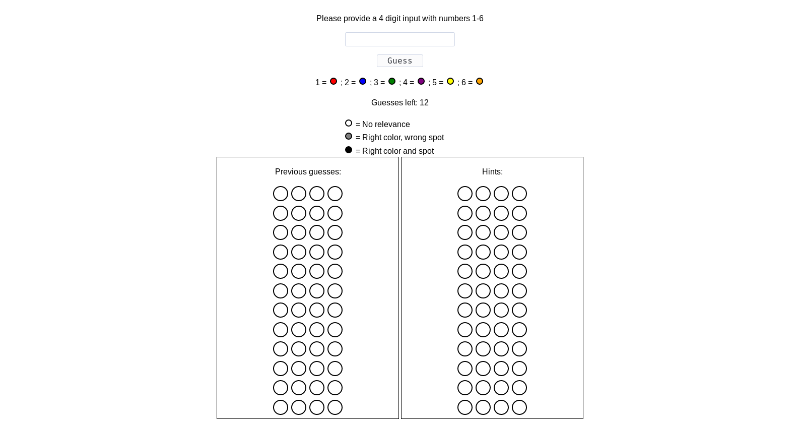
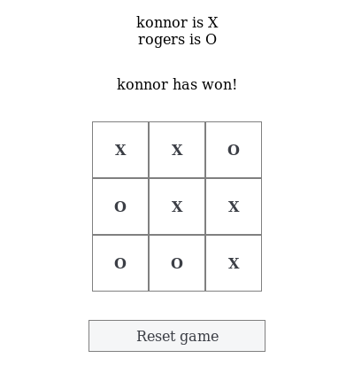
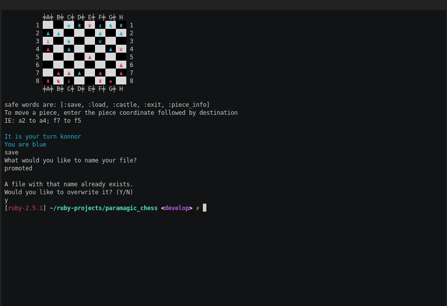

Konnor Rogers
Fullstack Web Developer
See my work
Below are some examples of my work.
My work ranges from Ruby / Rails, HTML / CSS,
Javascript, and React / Gatsby.
I'm always interested in new technologies and would love to help
create your next project.
 Source Code
Source Code
A simple Facebook inspired clone using Ruby on Rails, HTML,
CSS, and Javascript. It uses things such as AJAX requests,
RESTful APIs, Authentication, Email, and many other features.

Source Code
A simple blog created using Gatsby / React to record various
items. It includes things like testing setup, learning other
programming languages, and miscellaneous APIs.

Source Code
A flight booking clone which goes through a multistep form to
submit data to the Rails based backend. Database is PostgresQL
and is deployed via Heroku.

Source Code
A game of
Mastermind
created with Sinatra / Ruby to handle logic and HTML / CSS /
Javascript to be able to play the game in the browser.

Source Code
A game of TicTacToe to be played in the browser. It is created
using vanilla Javascript, HTML, and CSS as well as Webpack for
bundling javascript assets.

Source Code
A game of chess to be played in terminal, complete with things
such as en passant, castling, double move pawns, and various
other things you would expect from a game of chess. Created
with Ruby.
 Source Code
Source Code
A CLI based gem created with Ruby to keep consistent
configurations across multiple computers. This has taken on
many lives and I would love to talk about this project.